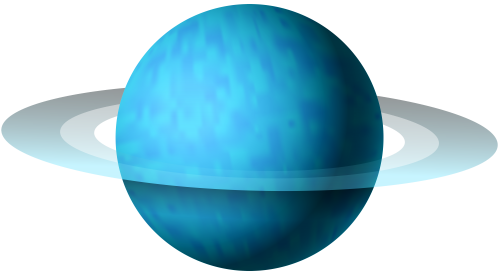
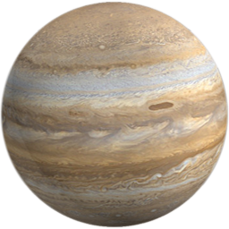
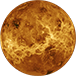
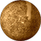

|
 |  |
 |  |
 |  |  |
Black Hole
The boundary of the region from which no escape is possible is called the event horizon. Although the event horizon has an enormous effect on the fate and circumstances of an object crossing it, according to general relativity it has no locally detectable features.In many ways, a black hole acts like an ideal black body, as it reflects no light. Moreover, quantum field theory in curved spacetime predicts that event horizons emit Hawking radiation, with the same spectrum as a black body of a temperature inversely proportional to its mass. This temperature is on the order of billionths of a kelvin for black holes of stellar mass, making it essentially impossible to observe directly.
Objects whose gravitational fields are too strong for light to escape were first considered in the 18th century by John Michell and Pierre-Simon Laplace. The first modern solution of general relativity that would characterize a black hole was found by Karl Schwarzschild in 1916, although its interpretation as a region of space from which nothing can escape was first published by David Finkelstein in 1958. Black holes were long considered a mathematical curiosity; it was not until the 1960s that theoretical work showed they were a generic prediction of general relativity. The discovery of neutron stars by Jocelyn Bell Burnell in 1967 sparked interest in gravitationally collapsed compact objects as a possible astrophysical reality.
Black holes of stellar mass are expected to form when very massive stars collapse at the end of their life cycle. After a black hole has formed, it can continue to grow by absorbing mass from its surroundings. By absorbing other stars and merging with other black holes, supermassive black holes of millions of solar masses may form. There is consensus that supermassive black holes exist in the centers of most galaxies.
The presence of a black hole can be inferred through its interaction with other matter and with electromagnetic radiation such as visible light. Matter that falls onto a black hole can form an external accretion disk heated by friction, forming quasars, some of the brightest objects in the universe. Stars passing too close to a supermassive black hole can be shred into streamers that shine very brightly before being "swallowed." If there are other stars orbiting a black hole, their orbits can be used to determine the black hole's mass and location. Such observations can be used to exclude possible alternatives such as neutron stars. In this way, astronomers have identified numerous stellar black hole candidates in binary systems, and established that the radio source known as Sagittarius A*, at the core of the Milky Way galaxy, contains a supermassive black hole of about 4.3 million solar masses.
On 11 February 2016, the LIGO Scientific Collaboration and the Virgo collaboration announced the first direct detection of gravitational waves, which also represented the first observation of a black hole merger. As of December 2018, eleven gravitational wave events have been observed that originated from ten merging black holes (along with one binary neutron star merger). On 10 April 2019, the first direct image of a black hole and its vicinity was published, following observations made by the Event Horizon Telescope in 2017 of the supermassive black hole in Messier 87's galactic centre